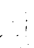

Runlength
Last modified: May 17, 2022
Contents
filter_narrow_runs
filter_narrow_runs (int length, ChoiceString(strict) [black|white] color)
| Operates on: | Image [OneBit] |
|---|---|
| Category: | Runlength |
| Defined in: | runlength.py |
| Author: | Michael Droettboom and Karl MacMillan |
Removes horizontal runs in the given color narrower than a given length.
Example 1: filter_narrow_runs(3, "black")

filter_short_runs
filter_short_runs (int length, ChoiceString(strict) [black|white] color)
| Operates on: | Image [OneBit] |
|---|---|
| Category: | Runlength |
| Defined in: | runlength.py |
| Author: | Michael Droettboom and Karl MacMillan |
Removes vertical runs in the given color shorter than a given length.
Example 1: filter_short_runs(3, "black")
filter_tall_runs
filter_tall_runs (int length, ChoiceString(strict) [black|white] color)
| Operates on: | Image [OneBit] |
|---|---|
| Category: | Runlength |
| Defined in: | runlength.py |
| Author: | Michael Droettboom and Karl MacMillan |
Removes vertical runs in the given color taller than a given length.
Example 1: filter_tall_runs(3, "black")

filter_wide_runs
filter_wide_runs (int length, ChoiceString(strict) [black|white] color)
| Operates on: | Image [OneBit] |
|---|---|
| Category: | Runlength |
| Defined in: | runlength.py |
| Author: | Michael Droettboom and Karl MacMillan |
Removes horizontal runs in the given color wider than a given length.
Example 1: filter_wide_runs(3, "black")

from_rle
from_rle (str runs)
| Operates on: | Image [OneBit] |
|---|---|
| Category: | Runlength |
| Defined in: | runlength.py |
| Author: | Michael Droettboom and Karl MacMillan |
Decodes a string-based run-length encoded version of the image.
The numbers alternate between "length of black run" and "length of white run". Runs go left-to-right, top-to-bottom. Runs rollover the right hand edge and continue on the left edge of the next run.
To encode an RLE string, use to_rle.
iterate_runs
object iterate_runs (ChoiceString(strict) [black|white] color, ChoiceString(strict) [horizontal|vertical] direction)
| Operates on: | Image [OneBit] |
|---|---|
| Returns: | object |
| Category: | Runlength |
| Defined in: | runlength.py |
| Author: | Michael Droettboom and Karl MacMillan |
Returns nested iterators over the runs in the given color and direction.
Each run is returned as a Rect object.
For example, to iterate over all runs:
for row in image.iterate_black_horizontal_runs():
# All the runs in each row
for run in row:
print run
most_frequent_run
int most_frequent_run (ChoiceString(strict) [black|white] color, ChoiceString(strict) [horizontal|vertical] direction)
| Operates on: | Image [OneBit] |
|---|---|
| Returns: | int |
| Category: | Runlength |
| Defined in: | runlength.py |
| Author: | Michael Droettboom and Karl MacMillan |
Returns the length of the most frequently occurring run of pixels in the given color and given direction.
Example 1: most_frequent_run("black", "horizontal")
result = 9
most_frequent_runs
object most_frequent_runs (int n, ChoiceString(strict) [black|white] color, ChoiceString(strict) [horizontal|vertical] direction)
| Operates on: | Image [OneBit] |
|---|---|
| Returns: | object |
| Category: | Runlength |
| Defined in: | runlength.py |
| Author: | Michael Droettboom, after an idea by Christoph Dalitz |
Returns the lengths of the n most frequently occurring runs in the given color and direction.
- n
- The number of runlengths to return. If n < 0, all runlengths will be returned.
The return value is a list of 2-tuples. The first element in the tuple is the run length, and the second element is its frequency. The list is sorted by descending frequency.
Example 1: most_frequent_runs(5, "black", "horizontal")
result = [(9, 32), (7, 22), (8, 22), (5, 19), (4, 15)]
run_histogram
IntVector run_histogram (ChoiceString(strict) [black|white] color, ChoiceString(strict) [horizontal|vertical] direction)
| Operates on: | Image [OneBit] |
|---|---|
| Returns: | IntVector |
| Category: | Runlength |
| Defined in: | runlength.py |
| Author: | Michael Droettboom and Karl MacMillan |
Returns the histogram of runlengths in the given color and direction.
- return_value
- The return value is an integer array. Each index in the array corresponds to a particular run length, and the value at that index is the number of times that that run length occurs in the image.
Example 1: run_histogram("black", "horizontal")
result = array('i', [0, 11, 10, 6, 15, 19, 10, 22, 22, 32, 9, 14, 5, 3, 2, 2, 1, 1, 0, 2, 0, 2, 0, 0, 0, 1, 0, 0, 0, 1, 0, 0, 0, 1, 0, 1, 0, 0, 0, 0, 0, 0, 0, 0, 0, 0, 0, 0, 0, 0, 0, 0, 0, 0, 0, 0, 0, 0, 0, 0, 0, 0, 0, 0, 0, 0, 0, 0, 0, 0, 0])
runlength_from_point
int runlength_from_point (FloatPoint point, ChoiceString(strict) [black|white] color, ChoiceString(strict) [top|bottom|left|right] direction)
| Operates on: | Image [OneBit] |
|---|---|
| Returns: | int |
| Category: | Runlength |
| Defined in: | runlength.py |
| Author: | Fabian Schmitt and Christoph Dalitz |
Returns the runlength of color in the direction direction starting from one pixel after point.
to_rle
str to_rle ()
| Operates on: | Image [OneBit] |
|---|---|
| Returns: | str |
| Category: | Runlength |
| Defined in: | runlength.py |
| Author: | Michael Droettboom and Karl MacMillan |
Encodes a string-based run-length encoded version of the image.
The numbers alternate between "length of black run" and "length of white run". Runs go left-to-right, top-to-bottom. Runs rollover the right hand edge and continue on the left edge of the next run.
To decode an RLE string, use from_rle.
Example 1: to_rle()
result = '42 12 56 17 53 19 61 10 63 9 63 8 64 7 64 7 64 7 64 7 64 7 63 7 64 6 64 7 64 6 65 6 64 6 63 7 63 7 65 5 65 4 66 5 65 5 65 5 64 5 65 5 53 2 10 4 52 4 9 4 52 4 9 5 51 4 9 5 30 5 15 7 7 5 28 8 14 9 5 6 27 7 14 12 2 6 26 8 14 19 28 7 14 5 2 13 28 7 14 6 2 11 29 7 13 8 2 9 30 7 13 9 5 4 31 8 12 10 39 8 11 12 39 7 11 13 38 7 10 5 1 9 10 1 26 7 10 4 3 9 10 2 24 8 8 5 4 9 9 3 24 7 8 4 6 9 10 1 24 8 8 3 7 9 35 7 20 8 34 8 20 8 34 8 19 9 33 9 19 9 33 8 20 9 33 8 20 9 33 8 21 8 32 9 20 9 32 9 20 9 10 1 19 11 20 9 9 2 20 10 20 9 9 2 21 9 20 9 9 2 21 9 20 9 9 2 21 9 20 9 9 2 21 10 19 9 9 1 22 10 19 9 9 1 22 10 19 9 9 1 22 11 18 9 9 1 23 10 18 9 9 1 23 10 18 9 33 10 18 8 34 11 17 8 35 11 16 8 35 11 16 8 35 11 16 8 36 11 15 7 37 11 15 5 33 2 5 11 14 3 33 3 6 12 12 3 33 3 8 11 10 4 17 1 16 2 10 12 6 5 17 5 13 1 11 13 4 4 18 5 27 14 1 4 18 6 29 15 17 8 31 16 10 11 34 35 36 33 39 29 43 25 47 21 52 15 62 4 329 4 36 2 30 4 31 5 32 6 25 5 35 6 21 7 39 11 6 11 46 21 52 14 66 1 27 0 '